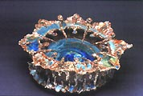

| Sally Resnik Rockriver
American ceramist and glass artist.

Photos by Ellen Giamportone.
Sally
Resnik Rockriver is an American ceramist and glass artist
based in Chapel Hill, North Carolina. Rockriver received a BFA (Hons)
in Ceramics and Painting from the University of North Carolina,
Chapel Hill in 1992 and an MFA in Ceramics and Combined Media from
Hunter College, City University of New York (CUNY) in 1996. She
has been a member of the Phi Beta Kappa Honor's Society since 1992.
She taught at Moorhead State University in Minnesota from 1996-98.
Rockriver generates chemical reactions in blown glass and ceramics,
creating 'geochemical formations' through high temperature crystal
growth. She established the Resnik
Thermal Lab, a glass blowing school and ceramics research
facility that emphasizes the intersection of art and science, in
Chapel Hill, North Carolina in 1999.
 
Artist's Statement
My
work mirrors a geothermal world by activating and harnessing thermal
formations of ceramic materials. I have always been more interested
in the glaze and how it forms than in the clay object itself. My
clay work is directed toward enhancing glaze formation. Initially,
I had to create forms that ceased controlling these glazes in order
to understand their free nature and I now try to capture and direct
this molten force.
The crystalline wall hangings emulate water, geology, and weather
systems. The subject of the work is the crystal, how it grows, and
how the running glaze is important to its formation. The crystalline
slab pieces have an undulating surface that enhances and directs
crystal growth. The works explore the ideal slope for crystal formation
along with capturing a moving crystal as it forms.
The calcite formations are evocative of caves, geysers, and underwater
formations.This is mainly due to the fact that what actually occurs
during and after the firing is similar to the processes that create
natural phenomena. While the pieces are hot, glaze bubbles and seeps
down the framework of the sculptures, similar to the way calcium
forms stalactites in a cavern. After the firing, humidity causes
this glaze to continue to grow. As the surface oxidizes, it develops
a mossy covering of spiny crystals. Upon weathering, the pieces
turn yellow and lavender, eroding and recrystallizing with every
season. These works do not imitate life, rather they are their own
geological specimen.

My glasswork highlights the ceramic glaze by encapsulating cores
of glaze in a glass column. I infuse blown glass forms with ceramic
glazes that react and bubble at this high temperature. These glazes
heat and crystallize as they cool, much like in my ceramic pieces
but in the supportive envelope of clear glass. Differing coefficients
of expansion and contraction form iridescent fissures that are magnified
by the glass. Blown glass compliments my ceramic works because it
allows me to magnify my glazes and separate them from the clay format.
In all of my works, I am designing a format that will accentuate
a given glaze. The tendency of the glaze to drip, run, pool, grow,
and crystallize is the primary focus of the work. The geological
tone is a direct result of the nature of these materials. As part
of my exploration, I share my findings with members of the scientific
community and treat many of my projects as research specimens. Underlying
all of my work is the thread of geochemistry and thermal formations.
More Artists of the Week
More Articles
|


{kind=link}
{kind=link}
{kind=link}
{kind=link}